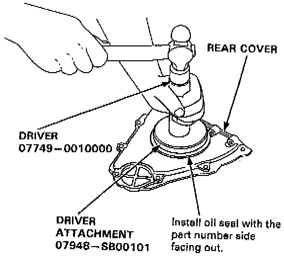
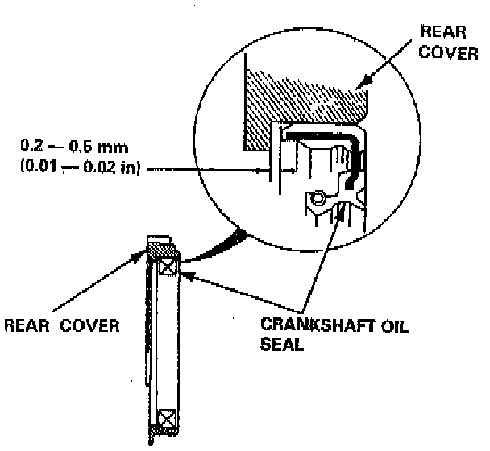

Rear Crankshaft Main Bearing Seal: Service and Repair
REMOVALGently pry crankshaft oil seal from the rear engine cover.

INSTALLATION
1. Using the special tool, drive the crankshaft oil seal into the rear cover.
NOTE: The seal surface on the block should be dry. Apply a light coat of oil to the crankshaft and to the lip of the oil seal.

2. Confirm that the clearance is equal all the way around with a feeler gauge.
^ Clearance: 0.2-0.5 mm (0.01-0.02 inch)